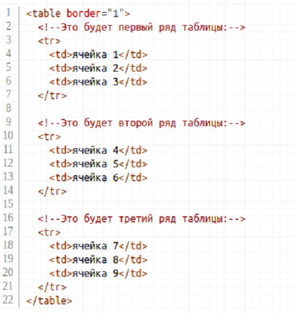
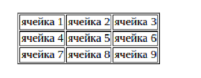
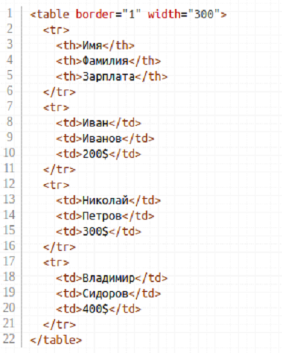
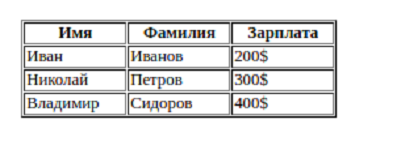
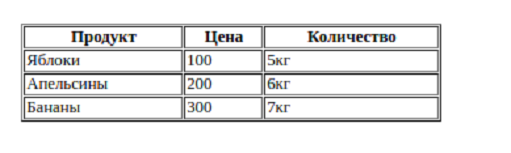
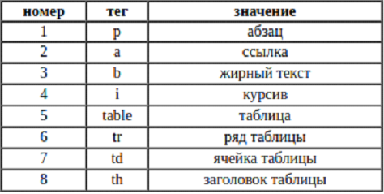

<link rel="stylesheet" href="projectStyle.css">

<section class="project-container">
	<div class="project-container__logo">
		
	</div>
	
	<p class="project-name">
		Работа с таблицами в HTML
	</p>
	<div class="description-block">
		<article class="description-block__text">
			<div class="logos">
				<!--  -->
			</div>
			

			<p>Сейчас мы с вами научимся делать таблицы на HTML.</p>
			<p>Я думаю, вы представляете, что такое таблица в обычной жизни - это набор строк и столбцов, на пересечении
				которых находятся ячейки.</p>
			<p>В HTML таблицы создаются по похожему принципу. Там тоже есть столбцы и строки с ячейками, однако HTML код
				таблиц при первом взгляде может показаться непривычным: таблицы создаются по рядам - сначала первый ряд,
				потом второй и так далее.</p>
			<p>Теги которые испольуются при создании таблицы : </p>
			<ul>
				<li>&lt;table&gt; &lt;/table&gt; - тег является главным при создании таблицы</li>
				<li>&lt;tr&gt;&lt;/tr&gt; - тег создает строку в таблице котоая потом разбивается на ячейки</li>
				<li>&lt;th&gt;&lt;/th&gt; - тег который является ячейкой заголовком, и текст внутри этого тега будет
					жирным и распологаться по центру</li>
				<li>&lt;td&gt;&lt;/td&gt; - тек который является обычной ячейкой</li>
			</ul>
			<p>Атрибуты для тега table : </p>
			<ul>
				<li>
					<p>border – атрибут который создает границы для таблицы, изначально border имеет значение 0.</p>
					<p>Синтаксис &lt;table border=”1”&gt; - появится граница шириной в 1px</p>
				</li>
				<li>
					<p>cellspacing – атрибут который убирает расстояние между ячейками</p>
				</li>
				<li>
					<p>width – атрбут позволяет изменять ширину таблицы</p>
				</li>
				<li>
					<p>height – атрибут позволяет изменять высоту таблицы</p>
				</li>
			</ul>

			<p>Атрибут для всех тегов таблицы: </p>
			<ul>
				<li>
					<p>align – атрибут позволяет выравнивать текст если вставим его в теги tr, th, td. Если атрибут
						вставить в тег table, то будет перемещаться вся таблица. </p>
					<p>Синтаксис: У данного атрибута три значения left – вырвнивает текст по левому краю, center –
						выравнивает текст по центру, right – выравнивает текст по правому краю </p>
				</li>
				<li>
					<p>bgcolor – атрибут который позволяет перекрашивать задний фон в тегах таблицы, </p>
					<p>если поставим его внутрь тега table, то перекраситься вся таблица, </p>
					<p>если поставить внутрь тега tr, то перекраситься вся строка</p>
					<p>если поставить внутрь тега th и td, то перекраситься ячейка</p>
					<p>Синтаксис: в hex формате. </p>
					<p>bgcolor = “red” - можем задавать английским названием цвета</p>
					<p>bgcolor = “#ff00a1” - в hex формате – чтобы получить цвет в hex формате мы можем скаать
						приложение colormania. </p>
				</li>
			</ul>
			<p>Давайте для примера сделаем таблицу с тремя рядами и тремя ячейками в каждом ряду:</p>
			
			<p>Результат выполнения кода : </p>
			
			<p>Пример создание таблицы с использование тега th </p>
			
			<p>Результат выполнения кода </p>
			
			<p>Задание 1</p>
			<p>Создайте таблицу по образцу </p>
			
			<p>Задание 1</p>
			<p>Создайте таблицу по образцу </p>
			
			<div class="description-block__image">
			</div>
		</article>
	</div>
</section>